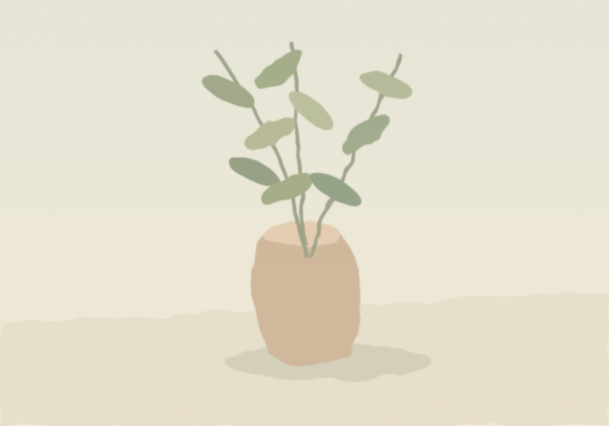

独立艺术家 / 水彩创作以画笔，记录一些微小的永恒。
把日常，
画成远方。✳

01 / SELECTED WORKS
一些风景，也是一段心情。
水色之间Selected works
每一次水与颜料的相遇，都是无法复制的偶然。ALL WORKS ARE ONE OF A KIND ↗

慢慢看，慢慢画。02 / THE ARTIST你好，我是林间。
你好，我是林间。
一个收集日常的人。
喜欢雨后的山，午后的窗，还有散步时遇见的一小片光。我用水彩记录它们，也记录自己与世界相处的方式。
比起描绘一个地方的样子，我更想留下身在其中的感受。让颜色自由流动，让生活里容易被忽略的温柔，被看见。
林间 Lin Jian
03 / SAY HELLO好的相遇，从一句你好开始。
一起，让灵感发生。↗
作品咨询 / 展览邀约 / 创作合作
hello@example.com ↗示例邮箱 · 发布前请替换为你的联系方式